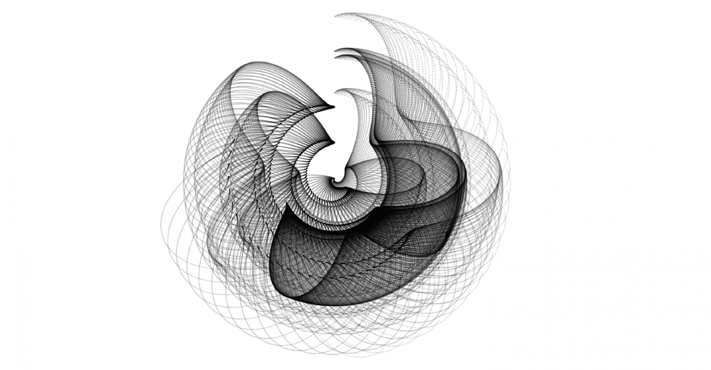
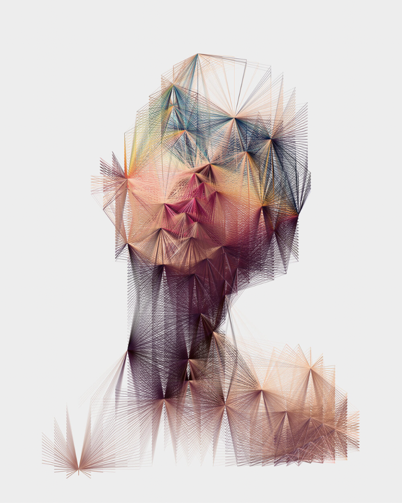
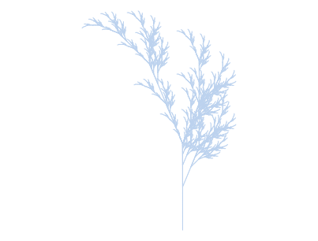

Generative Art
By definition, generative art is art created by a computer system, either through a specified algorithm or with intentional randomness in the creation process. A few examples of generative art are shared below.

Source: c2dh.uni.lu/projects/journal-digital-history

Source: markjstock.com

Source: espen.xyz
